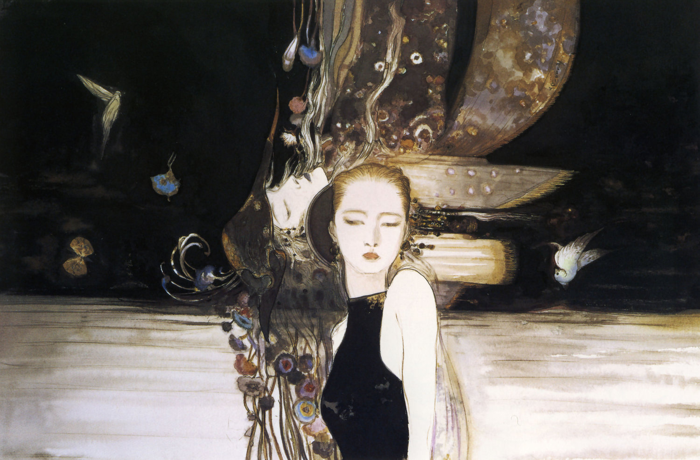

Chega a noite,
A melancolia e o peso
Do teu semblante em minha mente.
Anseio o esquecimento, sem caso.
Sob a luz rubra,
Tua lívida face
Mostra a mim tua natureza
Sem disfarce,
Mas sempre alteza.
Ah, ocultos em minha’lma,
O medo de revelar-me alguém que ama,
Meus pensamentos analíticos-excessivos,
E o toque insensível da ansiedade,
Que ataca, sem cessar, sem piedade.
Ao resplendor da lua,
Você cintila em meus braços,
Enquanto revela em teus olhos
O desejo por aquilo que é incerto.
A textura das tuas mãos,
Às minhas, derretendo,
Tornam-se apenas uma.
Meu império interior exclama:
“Beije-me.”
E no céu infinito,
Você cintila…
Pega a lança, crava-me.
No sangue formam-se aquelas palavras,
Mas já tão inefáveis,
Atrasadas, desgraçadas.
Na nossa última dança,
Onde eu pensava haver dois,
Havia apenas um.
